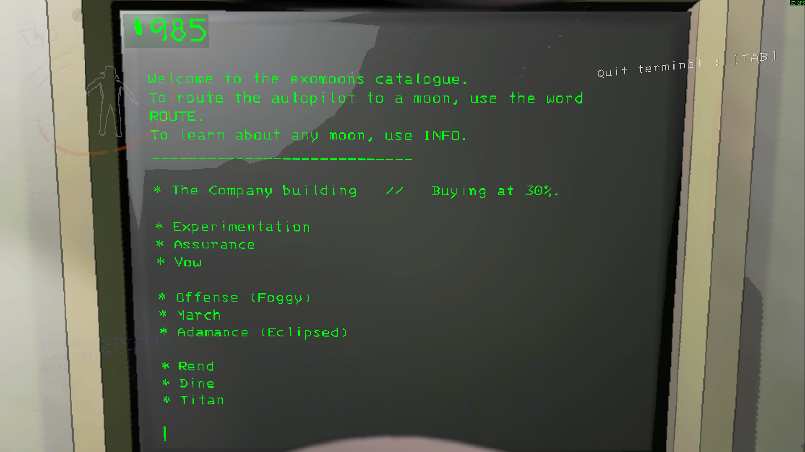

>Luas
Bem-vindo ao catálogo de exoluas.
Para direcionar o piloto automático para uma lua, basta escrever o nome da lua.
Para aprender sobre qualquer lua, use INFO.
--------------------------------------------
O prédio da Companhia // Comprando a 30%. (Significa que a companhia comprará seus itens com 30% do valor total deles. )

* EXPERIMENTATION
Primeira lua, usada como campo de testes. Tem uma fábrica abandonada e perigo moderado. Boa para iniciantes.
* ASSURANCE
Lua menos perigosa, com terreno corroído e clima instável. Mais tranquila para coletar sucata.
* VOW
Lua com vegetação densa e cheia de predadores. Um pouco mais difícil que Assurance.
* OFFENSE
Lua com mina e terreno acidentado. Apesar de parecer segura, tem bastante fauna hostil.
* MARCH
Lua grande e chuvosa, com mais sucata disponível. Exige mais atenção ao clima.
* ADAMANCE
Lua eclipsada, perigosa e com bastante sucata. Boa recompensa, mas alto risco.
* REND
Lua avançada, com mansão e nível de perigo alto. Oferece muita sucata, mas é arriscada.
* DINE
Lua ainda mais difícil que Rend, também com mansão. Requer preparo e equipamentos melhores.
* TITAN
Lua mais letal do jogo. Fábrica enorme, cheia de recursos, mas extremamente perigosa.
LUAS SECRETAS
* EMBRION
Uma lua condenada, cheia de robôs antigos chamados Old Birds. Eles começam inativos, mas despertam com o tempo ou durante eclipses. Muito perigosa, mas com sucata rara.
* ARTIFICE
Uma das luas mais letais do jogo. Descoberta através de pistas em Adamance, pode ser acessada digitando o nome no terminal. Grande quantidade de sucata, mas risco extremo.
* LIQUIDATION
Lua experimental que aparece nos arquivos do jogo, mas não é acessível normalmente. Tem valores de sucata altíssimos e clima severo.